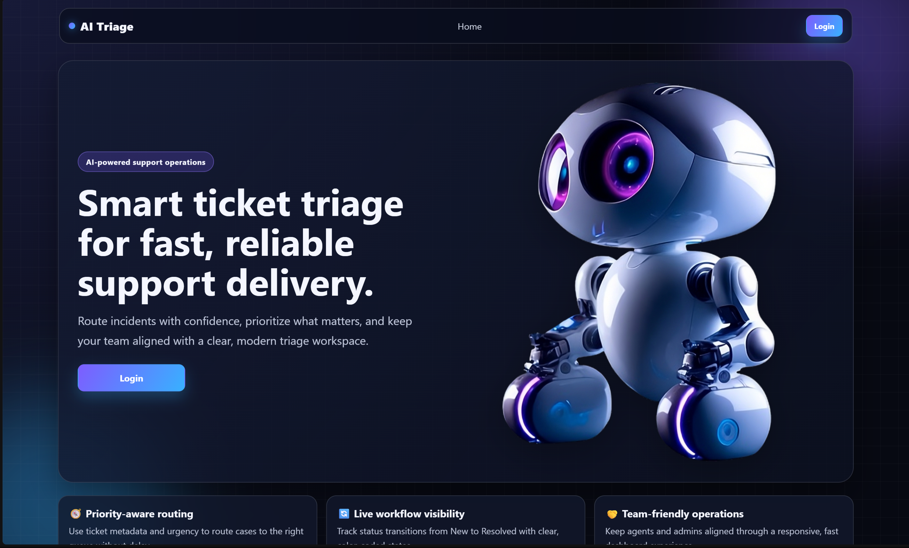
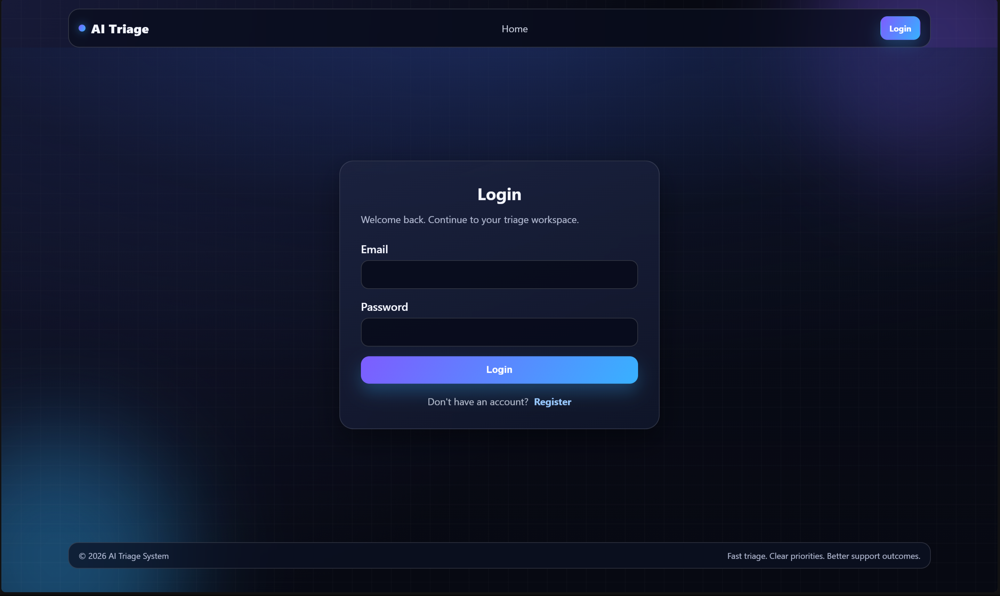

AI Triage System
Smarter ticket management, powered by roled-based-AI. An AI assisted ticket triage platform built with ASP.NET Core MVC that automatically organizes support requests, manages user roles, and streamlines issue handling through an intuitive interface.
Why I built it?
AI Triage started as a university project for my Web Development & Framework course. The assignment was to build a complete web application, and while it was intended to be a group project, I chose to take on most of the development myself.
At first, it was simply another course requirement. But as the project grew, it became much more than that. It pushed me into areas I hadn't explored before—from authentication and database design to role management and building a structured MVC application.
By the end, it wasn't just a project I submitted for a grade; it became one of the experiences that helped me understand how a real web application comes together.
AI Triage Dashboard
The main dashboard displaying ticket activity, AI categorization and system status.

Features
What can it do?
The system includes everything needed to manage support tickets efficiently.
- AI-assisted ticket triage
- Secure authentication
- Role-based permissions
- Ticket management
- Admin dashboard
- User management
- SQL server database integration
- Responsive interface with modren style
How it works?
From ticket to solution
Every request follows a simple workflow.
Incoming Ticket
User submits a new support request.
Store Request
The ticket is saved securely in the database.
AI Analysis
The AI understands the ticket and extracts useful information.
Classification
The request receives a category and priority.
Human Review
An administrator verifies the AI's decision.
Assigned
The ticket reaches the correct department.
Technology Stack
The technologies used to build the project, from backend logic to authentication and the user interface.
Backend
Database
Frontend
Security
System Architecture
Project structure
The application follows a clean MVC architecture that separates business logic, data, and presentation.
This keeps the codebase easier to maintain and allows new features to be added without affecting the rest of the application.
Authentication
Secure by design
Security was an important part of the project from the beginning. The application uses cookie-based authentication combined with role-based authorization to control access across the platform. Different users have different permissions, ensuring that administrative actions remain protected.
Login & Authentication

Challenges
What I learned?
Building the project wasn't just about writing code. Some of the biggest challenges included:
- Designing a scalable ticket workflow.
- Managing user roles and permissions.
- Keeping the database synchronized across different development environments.
- Creating a UI that remained clean while handling large amounts of information.
Each challenge helped improve both my backend and frontend development skills.
Future Improvements
Version 1 is complete, but there are still plenty of ideas worth building. Here's the roadmap for the next updates.
AI-powered ticket classification
Current implementation used throughout the project.
Smarter AI predictions
Improve classification accuracy with better prompts and evaluation methods.
Email notifications
Notify users whenever a ticket is updated or assigned.
Real-time ticket updates
Use SignalR so tickets update instantly without refreshing.
Analytics dashboard
Visualize ticket trends, workload and response times.
File attachments
Allow screenshots and supporting documents with tickets.
Docker deployment
Containerize the application for easier deployment.
Cloud hosting
Deploy the platform to Azure or AWS for public access.
Final Thoughts
AI Triage System was one of my biggest backend projects and gave me practical experience with authentication, database management, ASP.NET Core MVC, and building applications that solve real-world workflow problems.
More importantly, it taught me how different parts of a full-stack application come together to create a complete user experience.